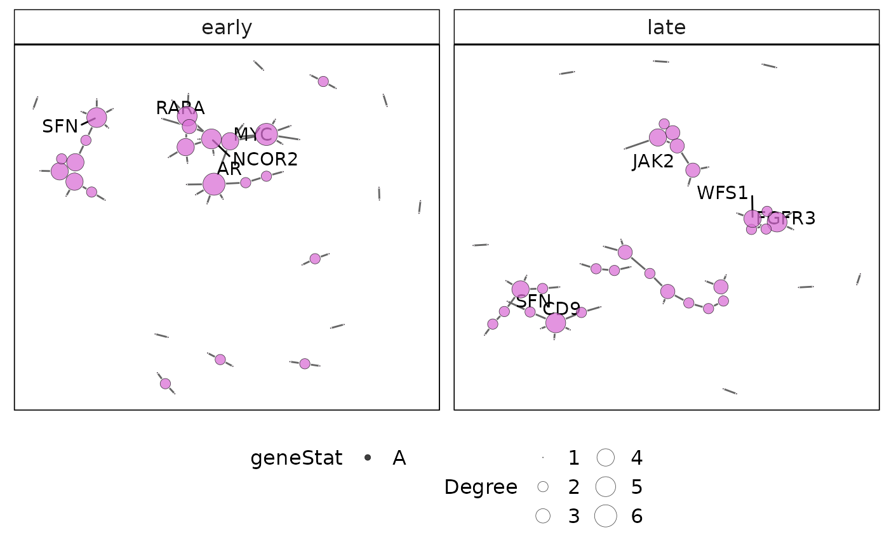

This function plots the protein-protein interaction (PPI) network for a gene-set cluster identified using vissE. The international molecular exchange (IMEx) PPI is used to obtain PPIs for genes present in a gene-set cluster.
plotMsigPPI(
ppidf,
msigGsc,
groups,
geneStat = NULL,
statName = "Gene-level statistic",
threshConfidence = 0,
threshFrequency = 0.25,
threshStatistic = 0,
threshUseAbsolute = TRUE,
topN = 5,
nodeSF = 1,
edgeSF = 1,
lytFunc = "graphopt",
lytParams = list()
)a data.frame, containing a protein-protein interaction from the
IMEx database. This can be retrieved from the msigdb::getIMEX() function.
a GeneSetCollection object, containing gene sets from the
MSigDB. The GSEABase::getBroadSets() function can be used to parse XML
files downloaded from MSigDB.
a named list, of character vectors or numeric indices specifying node groupings. Each element of the list represent a group and contains a character vector with node names.
a named numeric, containing the statistic to be displayed. The vector must be named with either gene Symbols or Entrez IDs depending on annotations in msigGsc.
a character, specifying the name of the statistic.
a numeric, specifying the confidence threshold to apply to determine high confidence interactions. This should be a value between 0 and 1 (default is 0).
a numeric, specifying the frequency threshold to apply to determine more frequent genes in the gene-set cluster. The frequecy of a gene is computed as the proportion of gene-sets to which the gene belongs. This should be a value between 0 and 1 (default is 0.25).
a numeric, specifying the threshold to apply to gene-level statistics (e.g. a log fold-change). This should be a value between 0 and 1 (default is 0).
a logical, indicating whether the threshStatistic
threshold should be applied to absolute values (default TRUE). This can be
used to threshold on statistics such as the log fold-chage from a
differential expression analysis.
a numeric, specifying the number of genes to label. The top genes are those with the largest count and statistic.
a numeric, indicating the scaling factor to apply to node sizes.
a numeric, indicating the scaling factor to apply to edge widths.
a character, specifying the layout to use (see
ggraph::create_layout()).
a named list, containing additional parameters needed for
the layout (see ggraph::create_layout()).
a ggplot object with the protein-protein interaction networks plot for each gene-set cluster.
data(hgsc)
grps = list('early' = 'HALLMARK_ESTROGEN_RESPONSE_EARLY', 'late' = 'HALLMARK_ESTROGEN_RESPONSE_LATE')
ppi = msigdb::getIMEX(org = 'hs', inferred = TRUE)
#> snapshotDate(): 2022-01-20
#> see ?msigdb and browseVignettes('msigdb') for documentation
#> loading from cache
plotMsigPPI(ppi, hgsc, grps)
#> Warning: Assuming the organism to be human.
#> Warning: Ignoring unknown parameters: size
#> Warning: Ignoring unknown aesthetics: text
